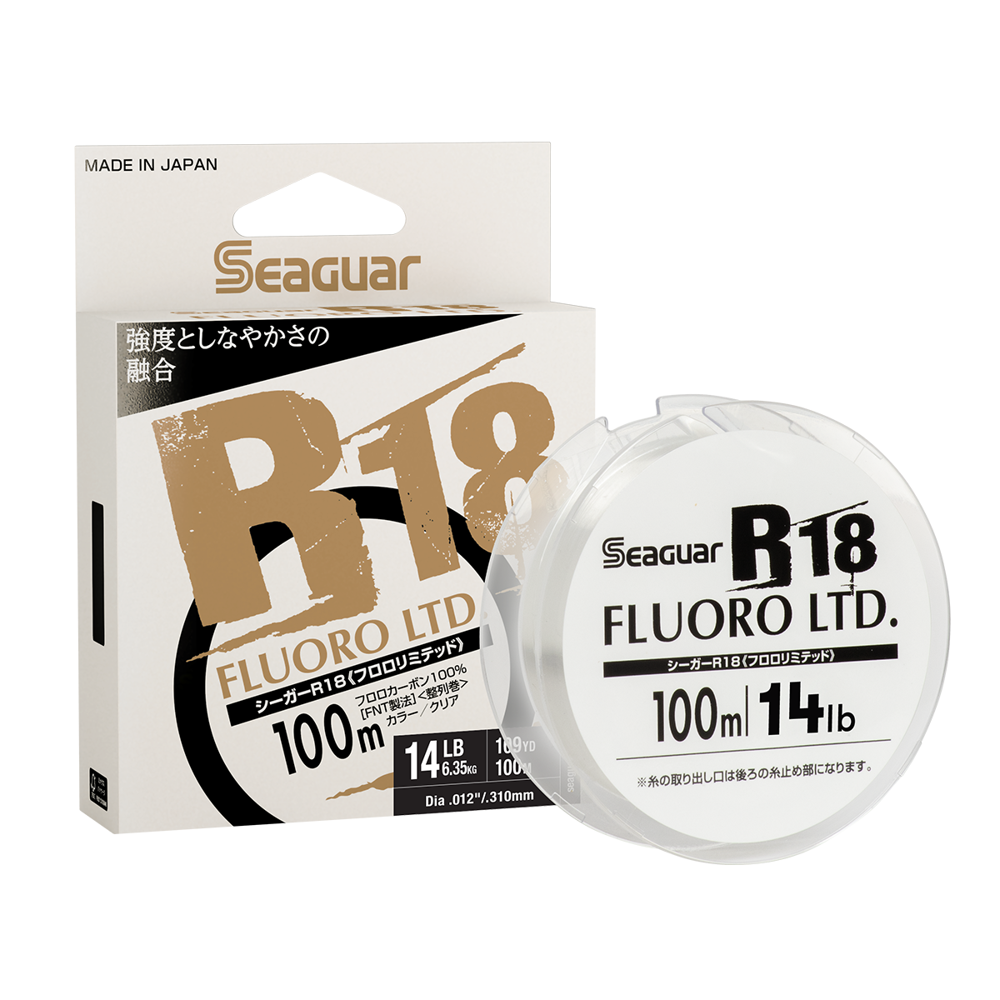

Seaguar JDM R18 Fluorocarbon
Diameter chart, reel capacity & backing guide

JDM R18 Mainline is Seaguar's Japan-market fluorocarbon offered through its JDM collection. It uses two fluorocarbon resins and comes on 100-meter spools, labeled approximately 109 yards. The range includes intermediate strengths such as 5, 7, and 14 lb.
- Construction
- Double-structure 100% fluorocarbon
- Listed strengths
- 4-20 lb
- Line type
- Fluorocarbon main line
Is JDM R18 right for your setup?
Consider R18 when you want fluorocarbon main line and a specific diameter between more familiar strength steps. Its 100-meter retail length is important: a deep spool may need more than one package for a full fill. A calculated backing plan can let one package supply a useful working section, but only if that section leaves enough line for your fishing.
How much JDM R18 will fit?
Calculated estimates, not measured fills. Stop at the reel manufacturer's fill level even if some line remains.
Seaguar JDM R18 Mainline diameter chart
Current JDM R18 Mainline variants. The 100-meter package is shown at the manufacturer's rounded 109-yard length; retain exact strength labels.
| Strength | Inches | mm | Spools (yd) |
|---|---|---|---|
| 0.007 | 0.165 | 109 | |
| 0.007 | 0.185 | 109 | |
| 0.008 | 0.205 | 109 | |
| 0.009 | 0.220 | 109 | |
| 0.009 | 0.235 | 109 | |
| 0.010 | 0.260 | 109 | |
| 0.011 | 0.285 | 109 | |
| 0.012 | 0.310 | 109 | |
| 0.013 | 0.330 | 109 | |
| 0.015 | 0.370 | 109 |
Choosing your JDM R18 strength
For lighter spinning setups, the 4, 5, 6, 7, and 8 lb choices offer small strength steps. Do not round a 7 lb selection to a generic 8 lb entry when calculating capacity; keep the actual R18 diameter.
For baitcasting or heavier presentations, compare 10, 12, 14, 16, and 20 lb against your lure, cover, and rod. The uncommon 14 and 16 lb labels are intentional product sizes, not data errors or invitations to substitute another brand's diameter.
The 4 and 5 lb entries both round to .007 inch, and the 7 and 8 lb entries both round to .009 inch. Their metric entries differ. Equal estimates in ReelCalc reflect those rounded inch inputs and should not be read as identical physical lines.
This is a specification-based setup guide, not a hands-on JDM R18 performance test.
Want a guided recommendation?
Continue in the Setup WizardSame pound test, different diameters
At your selected strength
Loading diameter comparisons...
What changes with another line?
Nearby diameters in the line database
| Line | Strength | Inches | Difference |
|---|---|---|---|
| Loading line database... | |||
Backing, working line & leaders
A 100-meter package is not 150 yards
Seaguar labels this package as 100 meters, approximately 109 yards. Use the displayed package length when budgeting working line; do not assume the familiar 150- or 200-yard fluorocarbon package.
Check working length before backing
Using backing can make a shorter R18 package reach the desired fill level. It cannot create more working R18. Leave reserve for fish runs and retying, with the connection below the line normally in use.
Keep the product identity exact
R18 Mainline is not the same product as a dedicated JDM Grand Max leader. If R18 is only a short leader on your setup, calculate the reel fill using the actual braid or mono main line.
How Much Fits on These Reels?
Estimated full-spool capacity for the JDM R18 strength selected above, with no backing. These are calculated examples, not physical tests or recommendations for every pairing.
Loading capacity estimates...
JDM R18 questions, answered
Why does R18 show 109 yards?
The package is 100 meters; Seaguar rounds that to 109 yards. The retail-length selector follows that published yard figure. This is not a claim that a metric package contains exactly 109.000 yards.
Is 7 lb R18 a real strength?
Yes. The current manufacturer range includes 5, 7, and 14 lb alongside more familiar strengths. The chart retains each exact option and its published diameter.
Will one package fill a 3000-size reel?
The size label alone cannot answer that. Select the exact reel and R18 strength. If the full-capacity estimate exceeds 109 yards, use more R18 or an intentional backing plan rather than treating a short full fill as complete.
Specifications & sources
Specifications checked against Seaguar's assigned product variants on 2026-09-12. Unassigned package combinations are excluded. Stock and package design can change; use the diameter printed on your own package if it differs.
Calculations use the catalog's listed inch diameters. Published inch and millimeter values may differ slightly because of rounding.
- Official Seaguar JDM R18 specifications Product construction, diameter entries, and assigned retail package lengths.